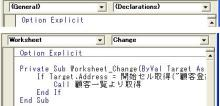
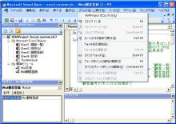

第10回.コーディングとデバッグ
エクセルで顧客管理を作ります、
前回までで、「顧客一覧」→「顧客登録」、が自動化出来ました、
しかも、シート名も自由に変更できます。
これだけでも、いろいろ応用範囲があり、結構使えるはずです。
「何かの一覧」→「何かの登録」、として自由に使用が可能です。
これからは、大量のプログラムを組み込んでいかなければなりません。
説明も、既出の命令はあまり説明できなくなります。
そこで、その前に、
効率的なコーディングと、プログラム作成では避けて通れないデバッグについて説明しておきます。
また、陥りやすい間違い、よくやってしまう間違い等も説明しておきます。
効率的なコーディング
モジュールの移動
コール先のSubモジュールやFunctionに移りたい場合があります。
その場合は、モジュール名を右クリックし「定義」、「表示」→「定義」、Shift+F2のいずれか。
元に戻る場合は、「編集」→「元に戻す」、Ctrl+Zのいずれか。
当然、ツールバーを表示してあれば、ボタンで可能です。
また、

右上のプルダウンのモジュールを選択しても移動可能です。
さらに、Ctrl+↓で、１つ下のモジュールに移動します。
Ctrl+↑なら、１つ上のモジュールにに移動します。
「Page Dn」「Page Up」でもほぼ同様の動きをします。
単語の選択
各単語となる、モジュール、オブジェクト、プロパティ、メソッド等をダブルクリックすると、全体が選択状態になります。
これをコピペします。
マウスを使用しない場合は、Shift+→等での選択となります。
うまく活用すれば、スペルミスを減らせます。
入力候補の表示
方法１．
Range("A1")
まで入力し、「Ctrl+Space」で、次の入力候補が表示されます。
矢印キーで選択し、「Tab」で、入力されます。
また、文字を続けて入力していけば、その文字で始まる候補だけになります。
方法２．
Range("A1").
と、「.」を入力した時点で、次の入力候補が表示されます。
後は同じです。
どちらでも好みで使い分けて下さい。
インデント
「ツール」→「オプション」でタブの量を設定できますが、初期値の4のままが良いと思います。
インデントは絶対に正しく行って下さい。
見た目の美しさだけでなく、バグの減少にも大いに貢献します。
For i = 1 To 10
If i = 1 Then
J = J + 1
Else
If J = 2 Then
K =
1
Else
K = 2
End If
End If
Next
For i = 1 To 10
If i = 1 Then
J = J + 1
Else
If J =
2 Then
K = 1
Else
K = 2
End If
End
If
Next
説明の必要がありませんね、どっちが良いか一目瞭然ですよね。
インデントは「Tab」キーで行います。
Tabで右へ、Shift+Tabで左へ移動します。
また、複数行を選択していれば、一気にインデントされます。
行の継続
「 _」、スペースに続けてアンダーバーで、行の継続が出来ます。
Cells(1, 1) = Cells(1, 1) & _
"○○"
むやみにやるのは、かえって見づらくなります。
画面解像度により、１行に入る文字数が違いますので、一概にはいえませんが、
見やすくするために、適時使って下さい。
その他、メニューにいろいろな機能がありますので、
自分で使いやすい、マウス操作、ショートカットを見つける事が重要です。
そして最も重要な事は、コードの使い回しです。
これに勝るものはありません。
逆に言えば、使い回しができるコーディングをするように心がけるということになります。
最初は、苦労しますが、後にそれが財産となります。
デバッグ
まず、VBE(Visual Basic Editor)の画面です。
>
VBAプロジェクトのコンパイル
一般には文法チェックと思われている事が多いようですが、正確には違うようです。
コンパイルによって、ブックサイズが大きくなり、Pコード（説明省略）が作成されるようです。
コンパイル前後での処理速度については、はっきりしていません。
コンパイルで早くなると言っている人もいるようですが、
MSには、ほとんど変化しないとの記事もあるようです。
ただし、他人に渡す場合は、コンパイルしてからが良いです。
また、コンパイル後に何も変更していない場合は使用不可になっています。
ステップイン F8
プログラムを１ステップづつ進めます。
Call先のSubモジュールや、Functionの中にも入り、１ステップづつ進みます。
全てのステップを確認する場合に使用します。
ステップオーバー Shift+F8
Call先のSubモジュールや、Functionの中には入りません。
元のプロシージャーを１ステップづつ進みます。
今実行しているプロシージャーの動作のみ確認する場合に使用します。
ステップアウト Ctrl+Shift+F8
今実行しているプロシージャーを抜けて、呼び出し元に戻ります。
ステップインでモジュールに入った時に、急ぎ呼び出し元の次ステップに進みたい場合に使用します。
カーソル行の前まで実行 Ctrl+F8
その通り、カーソル行の前まで実行一気に進みます。
ただし、ブレークポイントがあれば、そこで止まります。
ウォツチ式の追加
ウォツチ式の編集 Ctrl+W
クイックウォッチ Shift+F9
ウォッチ式については、省略します。
使わなくても困らないと思います。
ブレークポイントの設定/解除 F9
コードウインドウの左のグレー部分をクリックでも設定出来ます。
押すことにより、設定⇔解除が繰り返されます。
ただし、変数定義などは設定できません。
実行が設定したステップで中断します。
すべてのブレークポイント解除 Ctrl+Shift+F9
文章そのままですね。
次のステートメントの設定 Ctrl+F9
次のステートメントの表示
絶対に使わないと思います。
プログラムが小さいうちは、全ステップをステップインで実行することも可能ですが、
プログラムが、数千になった場合、実際の実行ステップはその数倍になり、
全てをステップインで実行することは、現実的に不可能になりますし、時間の無駄です。
また、プログラムだけを見ていても、最初は何が悪いのか分からないと思います。
特に、エラーにはならないが、結果が正しくないといった場合です。
そのような場合は、以下の方法を試みて下さい。
１．VBEのウインドウを小さくして、バックにエクセルの画面が見えるようにして下さい。
２．まずは、入口となるモジュールの先頭ステップにブレークポイントを設定
３．そしてマクロを実行(F5)して下さい。
４．バックのエクセルの動きを良く見て下さい。
５．あっ、この辺だという所があるはずです。
６．問題のありそうなステップの少し前に、ブレークポイントを設定
２．のブレークポイントは解除
７．再度マクロを実行(F5)して下さい。
８．ブレークポイントで中断後は、まずは、ステップアウトで進む。
９．問題のステップを特定して下さい。
10．SubモジュールやFunctionの場合は、ここでステップインに変更。
11．また、ステップアウトで進みます。
12．４．以降を繰り返す。
こうして、問題のステップを特定していきます。
もちろん、複数のSubモジュールの不整合によるバグも多いので、そうそうこんな単純には行きません。
ただ、伝えたいのは、「急がば回れ」ということです。
問題を特定せず、感を便りに適当に直したりすると、かえって状態を悪くします。
（経験を重ねれば、感で、多分ここだなというのも分かるようにはなってきますが）
ただし、ステップ実行の途中でも、エクセルを触ることが出来てしまいます。
選択シートを変更したり、選択セルを変更してしまうと、
それが原因で、プログラムが正しく動作しなくなる場合があるので注意して下さい。
アクティブシート以外を見る為にシート選択を変更した場合は、元のシートに戻すようにして下さい。
ただし、アクティブシートに頼らないコーディングが望ましいのですが、完全には無理です。
イミディエイトウインドウ Ctrl+G
先のVBEの画面の右下のウインドウです。
MSの製品ですので、他のウインドウも含めて、フロー化が出来ます。
ただ、私は好きではありませんが（笑）
ステップ実行中に、このウインドウで、変数等の値を見る事が出来ます。
（マクロを実行していなくても、一応使えますけど）
「?変数」を入力し、Enter
すると、その下に値が表示されます。
セル等を指定しても構いません。
「?Cells(1, 1)」
アクティブなシートの指定セルの値が表示されます。
「?Worksheets(2).cells(3,3)」
このようにすれば、アクティブではないセルの内容も確認出来ます。
「?Range("A1:B10")」
この指定はエラーとなります。
単純に言えば、（ただ一つの）値を表示出来ない指定はエラーとなります。
「?.Cells(1, 1)」←先頭が「.」です。
これはエラーとなります。
Withで省略したシート等は省略できません。
「?開始セル取得("顧客一覧")」
今回のプログラムで作成したFunctionですが、これは表示されます。
戻り値が１つのセルであるRangeオブジェクトだからです。
つまり、Functionでも、戻り値が、（ただ一つの）値を持つなら表示可能です。
Debug.Print
Debug.Print 対象
とコーディングすることで、イミディエイトウインドウに、対象の値を表示できます。
対象は、上で説明したエラーとならない指定です。
「ツール」→「オプション」
前述した、インデントのタブ間隔等は、このオプションで変更できます。
ただし、特別な理由が無い限り標準で使用して下さい。
自分一人で全て完結するならまだしも、他の人と関わるなら、特殊な設定はしない方が良いです。
絶対に
「全般」タブにある、「エラートラップ」は変更しないで下さい。
必ず、「エラー処理対象外のエラーで中断」にしておいて下さい。
これを変更すると、プログラム内でのエラートラップが正常に動作しません。
陥りやすい間違い、よくやってしまう間違い
Dim i1, i2 As Integer
これですと、i1は、Variantになってしまいます。
If A = 1 Or B = 1 And C = 1 Then
これは、どんな条件になるのでしょうか？
優先順は、And > Or が基本ですが、もしこれが正しいとしても、書いてはいけません。
必ず、()を付けて
If A = 1 Or (B = 1 And C = 1) Then
のように、優先順を明示して下さい。
If オブジェクト = ○○
これは文法エラーです。
If オブジェクト Is ○○、とIsを使います。
With Sheet(1)
Cells(1, 1) = 1
End With
このCellsは、アクティブシートのセル参照になってしまいます。
かならず、先頭に「.」を付けて、「.Cells」とします。
名前付引数
関数(引数1, 引数2, ・・・)
関数(名前1:=引数1, 名前2:=引数2, ・・・)
どちらでも通りますが、複数の引数がある場合は、名前付を使用して下さい。
上では、引数の順序を全て正しくしていとなければなりません。
また、「:=」とコロンを忘れずに。
Findメソッド
引数が多いので、省略できるものは省略して良いでしょう。
ただし、省略した場合、前回時の指定が引き継がれます。
また、エクセルでの検索にも影響を受けるので、
複数個所で使用している場合は、極力全て指定して下さい。
Application.WorksheetFunction.VLookup
Application.VLookup
どちらも、基本的には同じですが、下は古い書き方になります。
現在は、上を使用して下さい。
ただし、検索値が見つからない場合の動作に違いがあります。
上は、エラーで停止しますが、下なら戻り値を判定出来ます。
ただ、下を使ってのエラー対処は、どうかな？・・・と思いますけど。
上でも、エラートラップすれば良いです。
この他にも、最終行の取得方法で、たまに間違いというか勘違いかなと思える時もあります。
長くなりそうなので、その話は、また別の機会に。
その他いろいろあると思いますが、コードの使い回しをすれば、結構なくなるはずです。
同じテーマ「エクセル顧客管理」の記事
第7回.本格的なプログラムへ
第8回.顧客一覧より顧客データを取得
第9回.イベントを使ってマクロを起動させる
第10回.コーディングとデバッグ
第11回.顧客登録より顧客一覧へ更新
第12回.最終行の判定、Rangeオブジェクトと配列、高速化の為に
第13回.コントロールのボタンを配置
第14回.オブジェクトとプロパティの真実（GW特別号No1）
第15回.記述による処理速度の違い（GW特別号No2）
第16回.処理速度の向上はどこまでやれば良い（GW特別号No3）
第17回.商品マスタを作成、２段階の可変リスト
新着記事NEW ・・・新着記事一覧を見る
VBA100本ノック 100本目：WEBから100本ノックのリストを取得｜VBA練習問題（3月3日）
VBA100本ノック 99本目：自動席替え（行列と前後左右が全て違うように）｜VBA練習問題（3月2日）
VBA100本ノック 98本目：席替えルールが守られているか確認｜VBA練習問題（3月1日）
VBA100本ノック 97本目：Accessデータを取得（グループ集計）｜VBA練習問題（2月27日）
VBA100本ノック 96本目：Accessデータを取得（マスタ結合&抽出）｜VBA練習問題（2月26日）
VBA100本ノック 95本目：図形のテキストを検索するフォーム作成｜VBA練習問題（2月24日）
VBA100本ノック 94本目：表範囲からHTMLのtableタグを作成｜VBA練習問題（2月23日）
VBA100本ノック 93本目：複数ブックを連結して再分割｜VBA練習問題（2月22日）
VBA100本ノック 92本目：セルの色を16進で返す関数｜VBA練習問題（2月20日）
VBA100本ノック 91本目：時間計算（残業時間の月間合計）｜VBA練習問題（2月19日）
アクセスランキング ・・・ ランキング一覧を見る
1.最終行の取得（End,Rows.Count）｜VBA入門
2.RangeとCellsの使い方｜VBA入門
3.変数宣言のDimとデータ型｜VBA入門
4.マクロって何？VBAって何？｜VBA入門
5.Range以外の指定方法（Cells,Rows,Columns）｜VBA入門
6.セルのコピー&値の貼り付け（PasteSpecial）｜VBA入門
7.繰り返し処理（For Next)｜VBA入門
8.セルに文字を入れるとは（Range,Value）｜VBA入門
9.マクロはどこに書くの（VBEの起動）｜VBA入門
10.とにかく書いてみよう（Sub,End Sub）｜VBA入門
このサイトがお役に立ちましたら「シェア」「Bookmark」をお願いいたします。
記述には細心の注意をしたつもりですが、
間違いやご指摘がありましたら、「お問い合わせ」からお知らせいただけると幸いです。
掲載のVBAコードは動作を保証するものではなく、あくまでVBA学習のサンプルとして掲載しています。
掲載のVBAコードは自己責任でご使用ください。万一データ破損等の損害が発生しても責任は負いません。